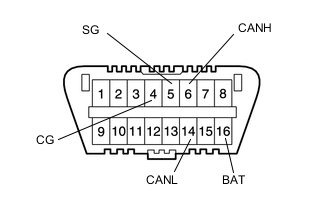

A large number of ECU controlled systems are used in this vehicle. In general, ECU controlled systems are considered to be very intricate, requiring a high level of technical knowledge to troubleshoot. However, most problem checking procedures only involve inspecting the ECU controlled system circuits one by one. An adequate understanding of the system and a basic knowledge of electricity is enough to perform effective troubleshooting, accurate diagnosis and necessary repairs.
For using the GTS
Before using the GTS, read the operator's manual thoroughly.
If the GTS cannot communicate with the ECU controlled systems when connected to the DLC3 with the power switch on (IG) and the GTS on, there is a problem on the vehicle side or the GTS side.
If communication is possible when the GTS is connected to another vehicle, inspect the diagnosis data link line (bus (+) line), CANH and CANL lines, and the power source circuits of the vehicle ECUs.
If communication is still not possible when the GTS is connected to another vehicle, the problem is probably in the GTS itself. Perform the Self Test procedure outlined in the GTS operator's manual.
TROUBLESHOOTING PROCEDURES
The troubleshooting procedures consist of diagnostic procedures for when a DTC is stored and diagnostic procedures for when no DTCs are stored. The basic idea is explained in the following table.
| Procedure Type | Details | Troubleshooting Method |
|---|---|---|
| DTC Based Diagnosis | The diagnostic procedure is based on the DTC that is stored. | The malfunctioning part is identified based on the DTC detection conditions using a process of elimination. The possible trouble areas are eliminated one-by-one using the GTS and inspection of related parts. |
| Symptom Based Diagnosis (No DTCs stored) |
The diagnostic procedure is based on problem symptoms. | The malfunctioning part is identified based on the problem symptoms using a process of elimination. The possible trouble areas are eliminated one-by-one using the GTS and inspection of related parts. |
Vehicle systems are complex and use many ECUs that are difficult to inspect independently. Therefore, a process of elimination is used, where components that can be inspected individually are inspected, and if no problems are found in these components, the related ECU is identified as the problem and replaced.
It is extremely important to ask the customer about the environment and the conditions present when the problem occurred (Customer Problem Analysis). This makes it possible to simulate the conditions and confirm the symptom. If the symptom cannot be confirmed or the DTC does not recur, the malfunctioning part may not be identified using the troubleshooting procedure, and the ECU for the related system may be replaced even though it is not defective. If this happens, the original problem will not be solved.
In order to prevent endless expansion of troubleshooting procedures, the troubleshooting procedures are written with the assumption that multiple malfunctions do not occur simultaneously for a single problem symptom.
To identify the malfunctioning part, troubleshooting procedures narrow down the target by separating components, ECUs and wire harnesses during the inspection. If the wire harness is identified as the cause of the problem, it is necessary to inspect not only the connections to components and ECUs but also all of the wire harness connectors between the component and the ECU.
DESCRIPTION
The data of each system and Diagnostic Trouble Codes (DTCs) can be read from the Data Link Connector 3 (DLC3) of the vehicle. When the system seems to be malfunctioning, use the GTS to check for malfunctions and perform repairs.
CHECK DLC3

The vehicle ECUs use ISO 15765-4 communication protocol. The terminal arrangement of the DLC3 complies with ISO 15031-3 and matches the ISO 15765-4 format.
| Symbol | Terminal No. | Name | Reference Terminal | Result | Condition |
|---|---|---|---|---|---|
| CG | 4 | Chassis ground | Body ground | 1 Ω or less | Always |
| SG | 5 | Signal ground | Body ground | 1 Ω or less | Always |
| BAT | 16 | Auxiliary battery positive | Body ground | 11 to 14 V | Always |
| CANH | 6 | CAN "High" line | 14 - CANL | 54 to 69 Ω | Power switch off* |
| Auxiliary battery positive | 6 kΩ or higher | Power switch off* | |||
| 4 - CG | 200 Ω or higher | Power switch off* | |||
| CANL | 14 | CAN "Low" line | Auxiliary battery positive | 6 kΩ or higher | Power switch off* |
| 4 - CG | 200 Ω or higher | Power switch off* |
Note
*: Before measuring the resistance, leave the vehicle as is for at least 1 minute and do not operate the power switch, any other switches or the doors.
If the result is not as specified, the DLC3 may be malfunctioning. Repair or replace the harness or connector.